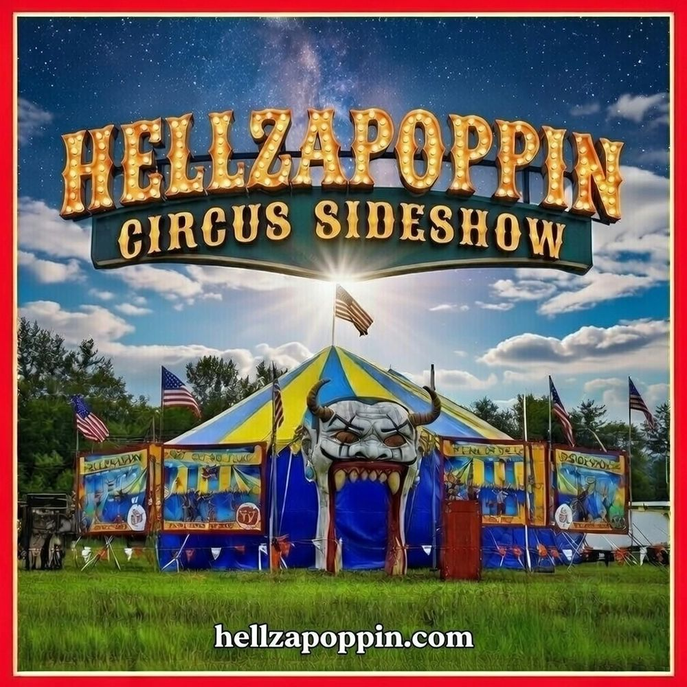

HELLZAPOPPIN'S BIG TOP CIRCUS PRODUCTION
Hellzapoppin's Big Top Circus Production is a mesmerizing spectacle that transports audiences into the heart of a vibrant, rock-n-roll circus experience. Under the iconic big top, our show unfolds as a symphony of wonder and excitement, featuring a diverse cast of extraordinary performers who breathe life into the circus arts.
This magnificent production features a 40’X80’ circus tent with a standing capacity of 500, complete with breathtaking hand-painted canvas sideshow banners and an imposing 15-foot-tall devil head entrance. This production encompasses a full stage show production and is available for a wide range of events, including festivals, private gatherings, and corporate functions, Hellzapoppin brings its rich cultural heritage of daring performances and awe inspiring acts to your doorstep.
BOOK THE BIG TOP ↗